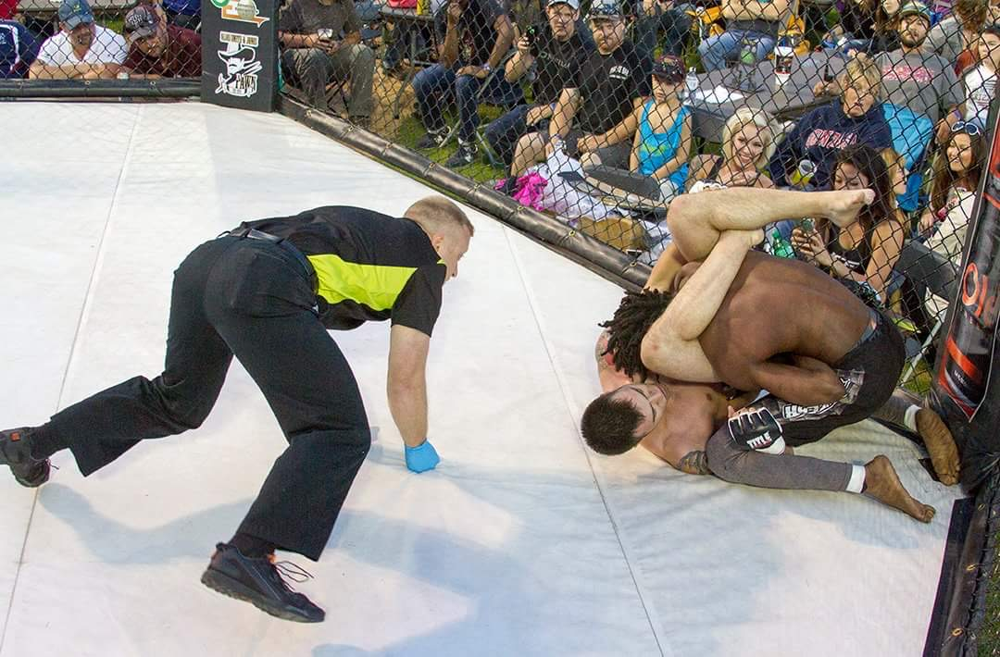

How to Triangle Choke from Full Guard
The idea of jiu-jitsu is to give the little guy a chance to beat the big guy.
-Royce Gracie
Introduction

The Triangle Choke is a submission where the fighter turns a
defensive position
into an offensive position! Utilizing timing and speed
the defensive fighter will capitalize on the offensive fighter's mistake.
Things Required
- Closed Guard
- I prefer an over-hook on either arm
- One grip on opponent's wrist
- Flexibility
- Speed
- Boa Constrictor-like leg squeeze
Step-by-Step Instructions
About
More Information